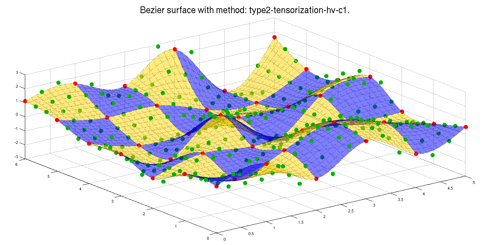

We are given a set of data points in the Euclidean space associated with two timestamps (m,n) organised on a regular grid. These timestamps give the order in which points must be interpolated. In this problem, for visualization convenience and without loss of generality, the (x,y) value of the data points correspond to the regular grid (m,n) and the z-value is randomly chosen. The points are organized in a 2D-cell corresponding to the order of interpolation.
From these data points, the goal here is to draw a 2d-Bézier spline interpolating those in a C^1 way. For this, you can use our code here, general for manifolds. The possible manifolds are the Euclidean space, the sphere and the special orthogonal group SO(3).
The code
Here is the code for interpolating data with a 2d-Bézier spline.
m = 6; n = 7;
data = cell(m,n);
for i=1:m
for j=1:n
data{i,j} = [i-1,j-1,randn(1)];
end
end
manifold = 'euclidean';
set_path
global_variables
geo_functions
problem = prepare_structure(data,manifold,10);
problem = control_points_simple_generation_2d(problem);
problem = curve_reconstruction_double_bezier_c1(problem,1);
figure;
draw_bezier_surface(problem);
title(['Bezier surface with method: ',problem.method,'.']);
Okay, let's dig a bit into that...
Data points
As mentionned, the data points must be stored in a 2d-cell. Let's construct a random set of data points where the (x,y)-values correspond to (m,n) and the z-value is random.
Hint: You may also call data_points_2d(manifold,type) to create some predefined test sets.
m = 6; n = 7;
data = cell(m,n);
for i=1:m
for j=1:n
data{i,j} = [i-1,j-1,randn(1)];
end
end
Problem structure preparation
The system is based on a structure called successively by different subfunctions in matlab. Each subfunction will use elements of differential geometry (the exponential, the logarithm, the distance, etc.). This is why this preparation step is crucial in order to inform the computer on the paths needed (the script set_path depends on the manifold) and on the elements of differential geometry available for the code (global_variables and geo_functions depend on the manifold).
manifold = 'euclidean';
set_path
global_variables
geo_functions
Create the problem structure.
problem = prepare_structure(data,manifold,10);
The structure should look like
problem =
interp: {6x7 cell}
type: ''
manifold: 'euclidean'
n: 6
m: 7
dim1: 1
dim2: 3
d: []
t: 10
nint: 0
Bézier spline optimization and reconstruction
The interpolation problem works in two steps:
- find the control points leading the Bézier curve
- reconstruct the actual spline.
Phase 1: Control points generation
The subfunction takes the structure as entry and will update it by adding the computed control points.
problem = control_points_simple_generation_2d(problem);
There exist different methods to compute the control points:
-
control_points_generation(problem): By an exact technique minimizing the Euclidean acceleration of the path. Warning, this technique is costly in time when the log and exp are not trivial. The technique is documented in the technical report of 2015.
-
control_points_simple_generation_2d(problem) With an efficient but not perfect algorithm based on the B-spline representation of curves generalized to surfaces. This technique is documented in ESANN2016
-
control_points_double_tensorization(problem) With the same efficient algorithm but applied to 1D curves horizontally and then vertically. The technique is also documented in ESANN2016
In the Euclidean space, all these techniques are identical.
Phase 2: Reconstruction of the curve
Here also, the subfunction takes the structure as entry and will update it by adding the computed spline. If the structure does not contain the control points, the reconstruction is not possible.
problem = curve_reconstruction_double_bezier_c1(problem,1);
There also exist different techniques to reconstruct the Bézier spline. The following ones return a C^1 surface. They are documented in technical report of 2015.
-
curve_reconstruction_mean_all_c1(problem) uses the altered defintion of Bezier surfaces based on averaging of all control points of the patch.
-
curve_reconstruction_double_bezier_c1(problem,k) uses the altered definition of Bezier curves horizontal-vertical (k=1) or vertical-horizontal (k=2) depending on the argument.
The two following ones return a C^0 surface and their limits are also discussed in the technical report of 2015.
-
curve_reconstruction_mean_all(problem) uses the basic definition of Bezier surfaces based on averaging of all the points of the patch.
-
curve_reconstruction_double_bezier(problem,k) uses the basic definition of Bezier curves horizontal-vertical (1) or vertical-horizontal (2) depending on the argument.
Plotting
We propose a method to plot the solution. The plotting method is chosen based on the manifold and on the paths set at the beginning.
figure;
draw_bezier_surface(problem);
title(['Bezier surface with method: ',problem.method,'.']);

Show/hide the code tutorial.